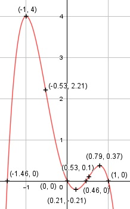

Aufgabe 58 f(x) = - 3x4 + 5x2 - 2x f'(x) = - 12x3 + 10x - 2, f''(x) = - 36x2 + 10, f'''(x) = -72x Definitionsbereich: -∞ < x < ∞ Wertebereich: -∞ < f(x) ≤ 4 (siehe Extrempunkte) Asymptoten: - Symmetrie: - Nullstellen: -3x4 + 5x2 - 2x = 0 x * (-3x3 + 5x - 2) = 0 x1 = 0 Durch Probieren gefunden x2 = 1 -3x3 + 5x - 2 = 0 Hornerschema: -3 0 5 -2 x2 = 1 -3 -3 2 --------------------------- -3 -3 2 0 Polynomdivision: -3x3 + 5x - 2 : (x - 1) = -3x2 - 3x + 2 -(-3x3 + 3x2) -------------- -3x2 + 5x - 2 -(-3x3 + 3x2) --------------- -3x2 + 5x - 2 -(-3x2 + 3x) ------------- 2x - 2 -(2x - 2) ---------- 0 -3x2 - 3x + 2 = 0 A, B, C - Formel: A = -3, B = -3, C = 2 x3,4 = x3,4 = x3,4 = 3 ± 5,74 x3,4 = ---------- -6 x3 = -1,46 x4 = 0,46 N1(0|0), N2(1|0), N3(-1,46|0), N4(0,46|0) Schnittpunkt mit der y-Achse: f(0) = -3 * 04 + 5 * 02 - 2 * 0 = 0 Sy(0|0) Extrempunkte: -12x3 + 10x - 2 = 0 Durch Probieren gefunden x1 = -1 f(-1) = -3 * (-1)4 + 5 * (-1)2 - 2 * (-1) = 4 Hornerschema: -12 0 10 -2 x1 = -1 12 -12 2 --------------------------- -12 12 -2 0 Polynomdivision: x1 = -1 -12x3 + 10x - 2 : (x + 1) = - 12x2 + 12x - 2 -(-12x3 - 12x2) ---------------- 12x2 + 10x - 2 -(12x2 + 12x) ------------- -2x - 2 -(-2x - 2) ----------- 0 -12x2 + 12x - 2 = 0 A, B, C - Formel: A = -12, B = 12, C = -2 x2,3 = x2,3 = x2,3 = -12 ± 6,93 x2,3 = ------------ -24 x1 = 0,21, f(0,21) = -3 * (0,21)4 + 5 * (0,21)2 - - 2 * (0,21) = -0,21 x3 = 0,79, f(0,79) = -3 * (0,79)4 + 5 * (0,79)2 - - 2 * (0,79) = 0,37 f''(-1) = -36 * (-1)2 + 10 < 0 --> Hochpunkt (-1|4) f''(0,21) = - 36 * (0,21)2 + 10 > 0 --> Tiefpunkt (0,21|-0,21) f''(0,79) = - 36 * (0,79)2 + 10 < 0 --> Hochpunkt (0,79|0,37) Wendepunkte: -36x2 + 10 = 0 |-10 -36x2 = -10 |:(-36) x2 = (10/36) |ⱱ x1,2 = ± 0,53, f(0,53) = - 3 * (0,53)4 + 5 * (0,53)2 - - 2 * 0,53 = 0,1 f(-0,53) = -3 * (-0,53)4 + 5 * (-0,53)2 - - 2 * (-0,53) = 2,21 f'''(0,53) = - 72 * 0,53 ≠ 0 --> Wendepunkt (0,53|0,1) f'''(-0,53) = - 72 * (- 0,53) ≠ 0 --> Wendepunkt (-0,53|2,21) Graph:
